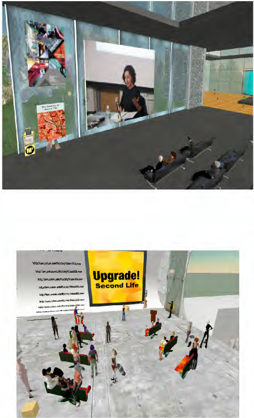

Founded November 2005 First show opened April 2006 Mission:
Ars Virtua Mission
To be art, to encourage art, and to connect artists and audience through active engagement. To provide a venue for development of work that cannot exist anywhere else and create a focal point for media and media industry.
Create new works that are native to the medium and mentor artists while presenting high quality new media works from diverse media sources.
Create a collaborative environment that encourages scholarship and research centered around MMO's, synthetic worlds and art. Enable a platform for new media arts education and understanding. We are committed to exploration, exploitation, and theorization about this new medium, and to drive work to fully explore the possibilities, limitations and dangers inherent in synthetic worlds.
To return to the community ownership of the cultural capital created in the environment through open governance and institutional transparency.
Encourage community by creating channels for connection and venues for work. Current Programs:
AVAIR - Ars Virtua Artist-in-Residence (AVAIR) is an extended performance that examines what it means to reside in a place that has no physical location. Ars Virtua presents artists with a radical alternative to "real life" galleries: 1) Since it does not physically exist artists are not limited by physics, material budgets, building codes or

landlords. Their only constraints are social conventions and (malleable-extensible) software. 2) The gallery is accessible 24 hours a day to an unlimited number of people in every part of the world simultaneously. 3) Because of the ever evolving, flexible nature of Second Life the "audience" is a far less predictable variable than one might find a Real Life gallery. Residents will be encouraged to explore, experiment with and challenge traditional conventions of art making and distribution, value and the art market, artist and audience, space and place. See http://arsvirtua.com/residence and http://turbulence.org/AVAIR/ for more details.
CADRE Salons - Artist discussions in conjunction with the CADRE Laboratory for New Media at San Jose State University. These lectures are free and open to the public and intended to discuss contemporary issues in new media and art practice. See http://cadre.sjsu.edu/salons for more details.
UPGRADE! SL - Upgrade! is an international, emerging network of autonomous nodes united by art, technology, and a commitment to bridging cultural divides. Its decentralized, non-hierarchical structure ensures that Upgrade! (i) operates according to local interests and their available resources; and (ii) reflects current creative engagement with cutting edge technologies. While individual nodes present new media projects, engage in informal critique, and foster dialogue and collaboration between individual artists, Upgrade! International functions as an online, global network that gathers annually in different cities to meet one another, showcase local art, and work on the agenda for the following year. See also http://arsvirtua.com/upgrade
Mixed Realities - MIXED REALITIES is an international juried competition that will result in the commissioning of 5 networked art works to be exhibited/performed at Turbulence.org; Art Interactive, a gallery in Cambridge, Massachusetts, U.S.A; and Ars Virtua, a gallery in the online 3D rendered environment, Second Life. Each commission will be $5,000 (US). See also http://transition.turbulence.org/comp_07/guidelines.htm
"Borders, Boundaries, Liminal Spaces" - A conference planned for April, native to the space. Our interest lies in both the synthetic and the terrestrial world though fundamentally one is a subset of the other. A Venn diagram may hold visual information about this relationship, but it misses the point. There is a functional liminal space that exists outside the terrestrial. We want to emphasize that while there is a relationship here the liminal space that is created synthetically doesn't exist in a terrestrial sense. So the atoms and the electrons are terrestrial and represented by our friend Venn, the intellectual space is not however anything but contained by materials and represents a different space. See also http://arsvirtua.com/borders/
LIVE BIENNIAL OF PERFORMANCE ART 2007 - LIVE is presenting an exciting new node for it's October 2007 Biennial, for 1 or 2 days performances will be held in the virtual world of Second Life (http://www.secondlife.com) as well as in venues in Vancouver. These performances will be held in partnership with Ars Virtua Gallery and New Media Center. LIVE is currently looking for Avatar Performance Artists wishing to perform for this 1-2 day event. The event will be simulcast in Vancouver.
Galleries
We have managed to maintain an aggressive schedule of high quality new media shows. Below is a brief description of each, more information can be found at http://arsvirtua.com/exhibitions/Archive.html
Show Chronology:
"The Real" - ...Neural Blankes brings us the humble pen, and models it perfectly. This work has been chosen as a symbol for the show in that it talks about both the rendered environment and the world outside the computer. Viewers are also invited to take home a copy as a souvenir of the show.
"How have you been an artist today?" - How have you been an artist today? This is the name of an ongoing interventionist art project and investigation started by artist Michael Smit. In it, in an exchange with Smit or someone else, people are invited to consider and respond to this question, in a documented conversation.
"Transposition" - Temporal abstractions of information have always been important to communicate ideas, whether simple or complex. By translating information into a visual form, we're able to reflect upon it with a different perspective. This creation of perspective is the key to transposition.
"Second Life Landscape Initiative" - SLLI is an attempt to understand landscape in the synthetic world of Second Life. We are presenting the different landmasses in several forms...
"honesty is our policy" - I always know that my television has drifted over to the Fox network when I catch a glimpse of a teaser for an upcoming news story about "internet predators;" the well of horror tales involving fake identities and malicious wrongdoers lurking on the internet never seems to run dry. The motif of a 50 year old married man hiding behind a myspace page designed to capture the interest of young girls, or armies of vicious bloggers passing off rumors as news (which, in turn, give the "real news" – that which is on TV and in the newspaper – a chance to restate their authority) – these sort of morality tales have been covered to death by the mainstream media as they feed our communal desire to fear the unknown. And what, frankly, could be more unknown than technology that offers to connect strangers to one another and the opportunity to experience another form of reality?
"immersivity through synchronization" - Deleuze, alluding to Kant and Schelling, at times refers to his philosophy as a transcendental empiricism. In Kant's transcendental idealism, experience only makes sense when organized by intellectual categories (such as space, time, and causality). Taking such intellectual concepts out of the context of experience, according to Kant, spawns seductive but senseless metaphysical beliefs. (For
example, extending the concept of causality beyond actual experience results in unverifiable speculation about a first cause.) Deleuze inverts the Kantian arrangement: experience exceeds our concepts by presenting novelty, and this raw experience of difference actualizes an idea, unfettered by our prior categories, forcing us to invent new ways of thinking.
"13 most beautiful avatars" - 13 Most Beautiful Avatars, an exhibition in Second Life's increasingly popular Ars Virtua gallery --a virtual nonprofit arts organization-- captures the most visually dynamic and celebrated "stars" of Second Life. The Matteses have been living in the virtual world, Second Life, for over a year, exploring its terrain and interacting with its peculiar inhabitants. The result of their "video-game flanerie" is this series of portraits.
"Imaging Place" - "Imaging Place" has been under development since 1997 and includes work from around the world including Taipei Taiwan, São Paulo Brazil, Kamloops BC
Canada, Warsaw Poland, the U.S./Mexico Border, Fort Point MA, Lowell MA, the Miami River, Kaliningrad Russia, Haverhill MA, Niagara, New England, Appalachia, and Florida. Although the method borrows freely from the traditions of documentary still photography and filmmaking, it departs from those traditions by using nonlinear narrative structures made possible by computer technologies and telecommunications networks.
The work is projected up to nine by twelve feet in a darkened space with a pedestal and a mouse placed in the center of the installation enabling the audience to interact with it.
"Second Front Performance" - Second Front is the first dedicated performance art group in Second Life. To officially open JC Fremont's Installation at Ars Virtua, Second Front will be creating a real-time interpretive and site-specific performance based on JC Fremont's theme 'Borders.'
Recently Ars Virtua has been working with Franco and Eva Mattes to recreate famous performances. We find that these recreations function differently, and have a different context when performed in the synthetic world of Second Life. Presently this is an ongoing project which includes such works as "Shoot," "Seed Bed," and "7000 Oaks."
"Fandomania" - Interrogates issues of identity through a series of photographs of cos-play and gender play at science fiction conventions and paintings created through traditional sittings of RL furries. Produced in association with Aperture.